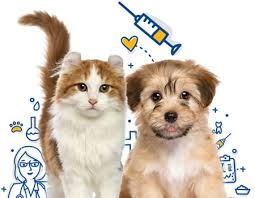
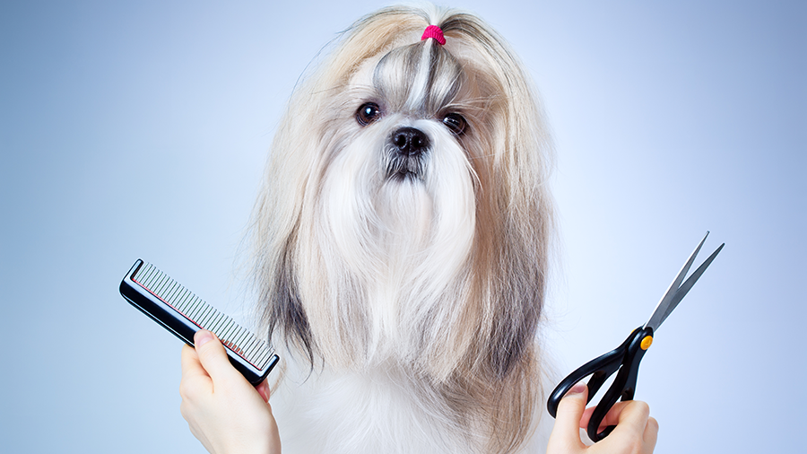
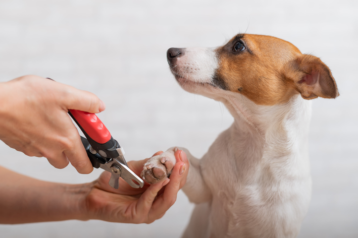

Vacina
A vacina para pets é essencial para a saúde do animal, protegendo contra doenças graves como cinomose, parvovirose, coronavirose, hepatite infecciosa canina, adenovirose, parainfluenza e leptospirose (V8 e V10) e raiva. O protocolo geralmente começa entre 6 e 8 semanas de vida, com doses de reforço periódicas, seguidas de reforços anuais, conforme orientação do médico veterinário.
Banho
O banho em animais serve para promover a saúde e o bem-estar, removendo sujeiras, odores e parasitas, além de ser um aliado no tratamento de doenças de pele. A higiene regular contribui para a prevenção de problemas dermatológicos e infecções, enquanto a escovação e a tosa higiênica ajudam a manter o pelo saudável e a evitar o acúmulo de pelos mortos.

Tosa
A tosa em animais é fundamental para a saúde e bem-estar, indo além da estética. Ela ajuda a evitar o acúmulo de sujeira, parasitas e odores, previne problemas de pele, alergias e infecções, e contribui para o conforto e a segurança do pet, prevenindo acidentes causados por pelos longos nas patas.
Corte de Unha
O corte regular e adequado das unhas é fundamental para a higiene pessoal e a prevenção de problemas de saúde, como infecções e unhas encravadas.
